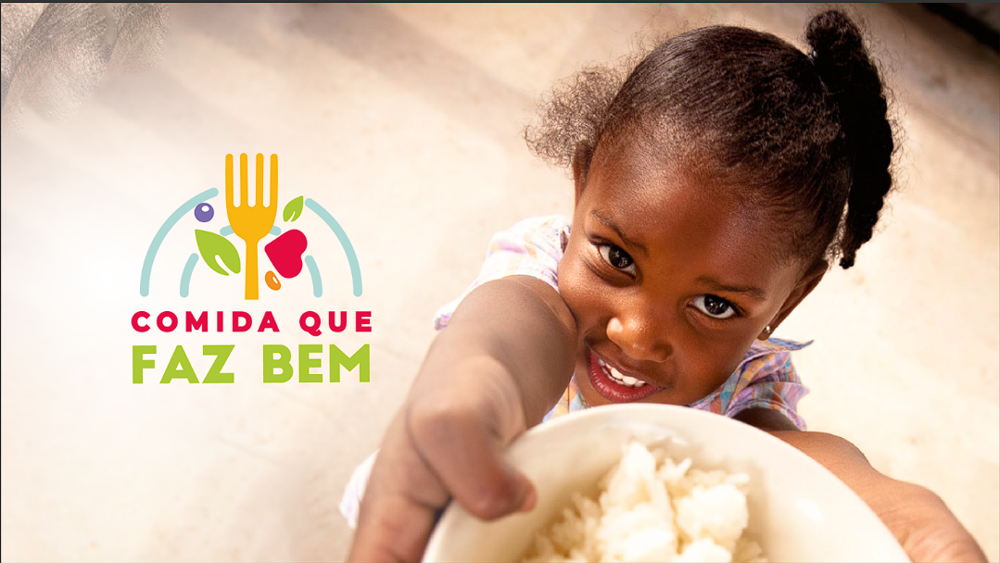
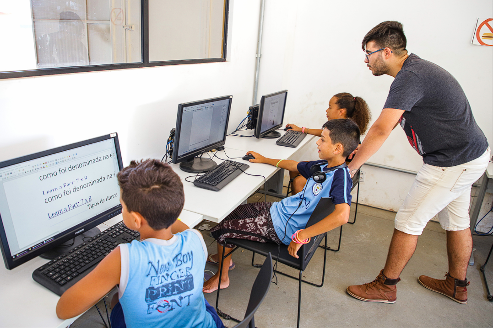

Prato Cheio
Projeto focado no combate à fome, realizando a arrecadação e entrega de refeições e cestas básicas para famílias em situação de vulnerabilidade.
Saiba Mais sobre o ProjetoConheça nossos projetos que transformam a comunidade diariamente.

Projeto focado no combate à fome, realizando a arrecadação e entrega de refeições e cestas básicas para famílias em situação de vulnerabilidade.
Saiba Mais sobre o Projeto
Oferece oficinas e capacitação técnica em tecnologia para jovens e adultos, preparando-os para o mercado de trabalho moderno.
Saiba Mais sobre o Projeto